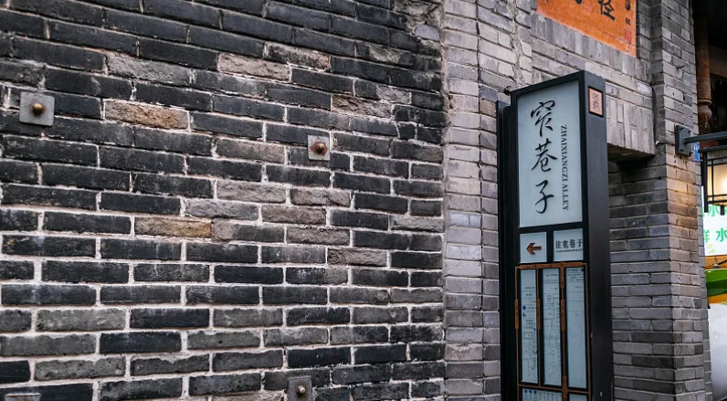

火锅、串串、冒菜、回锅肉……麻辣鲜香，让人欲罢不能！
成都大熊猫繁育基地，近距离观看国宝的呆萌日常。
九寨沟、黄龙海拔较高，提前备好红景天，慢走多休息。
人民公园鹤鸣茶社，盖碗茶配掏耳朵，体验老成都生活。
世界自然遗产，以翠海、叠瀑、彩林、雪峰、藏情"五绝"著称。
世界自然遗产，以彩池、雪山、峡谷、森林"四绝"闻名。
"香格里拉之魂"，雪山、冰川、湖泊、草甸的绝美组合。
世界文化与自然遗产，中国四大佛教名山之一，云海佛光奇观。
蜀山之后，登山徒步胜地，大熊猫的栖息地。
世界文化遗产，战国时期水利工程奇迹，至今仍在使用。
世界文化与自然遗产，唐代石刻弥勒佛坐像，通高约71米。
古蜀文明遗址，出土青铜神树、黄金面具等神秘文物。
中国四大古城之一，三国文化、风水文化汇聚地。

历史文化街区，体验巴蜀休闲生活与地道美食文化。